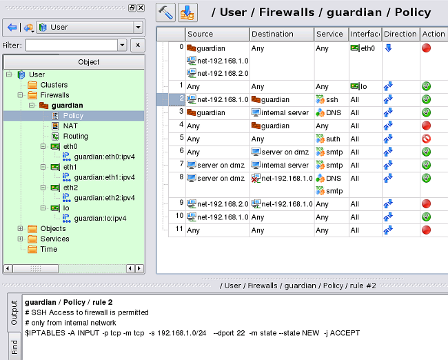

Vadim Kurland vadim@fwbuilder.org
This is the first article in the mini-series of two articles about Firewall Builder.
Systems administrators have a choice of modern Open Source and commercial firewall platforms at their disposal. They could use netfilter/iptables on Linux, PF, ipfilter, ipfw on OpenBSD and FreeBSD, Cisco ASA (PIX) and other commercial solutions. All these are powerful implementations with rich feature set and good performance. Unfortunately, managing security policy manually with all of these remains non-trivial task for several reasons. Even though the configuration language can be complex and overwhelming with its multitude of features and options, this is not the most difficult problem in my opinion. Administrator who manages netfilter/iptables, PF or Cisco firewall all the time quickly becomes an expert in their platform of choice. To do the job right, they need to understand internal path of the packet inside Linux or BSD kernel and its interaction with different parts of packet filtering engine. Things get significantly more difficult in the installations using different OS and platforms where the administrator needs to switch from netfilter/iptables to PF to Cisco routers and ASA to implement coordinated changes across multiple devices. This is where making changes get complicated and probability of human error increases. Unfortunately typos and more significant errors in firewall or router access list configurations lead to either service downtime or security problems, both expensive in terms of damage and time required to fix.
Firewall Builder (also known as fwbuilder, http://www.fwbuilder.org) is a universal firewall configuration and management tool that lets you define security policy on a higher level of abstraction and hides internal structure of the target firewall platform. For example, it can decide which iptables chain is right for each generated iptables rule automatically, without your input. It can pick right iptables target for both policy and NAT (Network Address Translation) rules as well as properly use most popular iptables modules, all automatically. Firewall Builder generates correct PIX translation rules, choosing between "nat", "global" and "static" commands as appropriate, using the same definition of the NAT rules as it uses for iptables and PF. It is aware of the differences between various versions of iptables, PF and other platforms and chooses optimal syntax for each to utilize new features that constantly appear in these platforms as they evolve. It enforces best practices in policy design and helps you deploy and activate generated policy on the firewall.
Firewall Builder does not aim at just supporting one particular firewall platform. The goal is to be able to generate configuration for many different firewalls from the same representation in the GUI. To do this, Firewall Builder works with an abstract high level model of a firewall which incorporates features found in all target firewalls. In other words, Firewall Builder is not another iptables GUI, or PF GUI, or ipfilter GUI. Firewall Builder works with a firewall that is neither one of these, and yet at the same time it is all of them combined. It has useful features found in all of the target platforms. If a feature that it implements is not supported in some target firewall, it tries to emulate it (if possible) to make it look like the target really supports it.
Since Firewall Builder works with an abstract firewall, all discrepancies go away and you always see consistent model regardless of the chosen target firewall platform. For PIX, the program can make it look like NAT is done after access control rules which is consistent with the behavior of iptables and PF (but this is optional). For PF, the program always uses PF option that switches it to the non-default "first match" behavior. In the end, the program takes care of translating the firewall model it presents to the user into configuration of the actual target firewall.
Policy and NAT rules built in Firewall Builder look very familiar to anyone who ever worked with Firewall-1, PIX, iptables, PF and so on. This is because these rules are just generalization of the ideas and features found in all of those firewalls. The program helps you create and manage rule sets and then translates them into configuration language of the chosen target firewall platform.
Firewall Builder supports iptables (netfilter), ipfilter, pf, ipfw, Cisco ASA (FWSM, PIX) and Cisco routers extended access lists. Firewall Builder is more complex than many basic firewall configuration GUI such as Firestarter, but on the other hand one can build very complex policies with Firewall Builder and fully utilize flexibility and power of iptables and other supported firewalls. Firewall Builder works well both as a configuration tool for the local firewall protecting machine where fwbuilder is running and as a firewall configuration UI that manages configuration on several remote dedicated firewalls and routers.
General idea should be familiar to anyone who ever worked with commercial firewall management systems. All configuration management operations can be performed from one central place, Firewall Builder GUI. You create and manage collection of objects that describe network addresses, hosts and firewalls, as well as services, and then build firewall policy and NAT rules using these objects. Policy rules are defined in terms of "Source" and "Destination" addresses and "Service" and can have additional parameters such as interface association, direction, time interval and optional platform-dependent attributes. NAT rules are defined by addresses and services before and after translation.
Rules are built with simple drag and drop operations and then firewall configuration can be generated with one click of a mouse. Objects used to describe hosts, networks and services can be used multiple times in rules of many different firewalls. If you make a change in one object, rules of all firewalls that use it will be automatically updated on the next recompile. Whenever you make a change to any object, all firewalls that use it directly or indirectly (as a member of a group, for instance) are marked as requiring recompile in the GUI.
In the end, Firewall Builder produces a script or configuration file in the language of the target firewall. For iptables, it creates shell script that loads iptables rules, while for other platforms it creates configuration file suitable for them. This makes it simple to deploy and activate generated policy and also helps integrate Firewall Builder with existing automation scripts.
Firewall Builder GUI has built-in component that uses external ssh client to copy generated configuration to the firewall and then activate it. This works with all supported platforms, including iptables on Linux, PF, ipfilter or ipfw on BSD and Cisco routers and ASA (PIX) firewalls.
The program comes with a collection of over 100 standard objects that can be used to describe standard address blocks and networks, such as those defined by RFC1918, whole multicast address block as well as addresses of multicast groups used by popular protocols, various standard IPv4 and IPv6 address allocations. The library of standard objects also includes popular TCP, UDP and ICMP services.
Firewall Builder implements many best practices in firewall policy design and firewall management procedures. Here are just a few examples:
Recently released Firewall Builder 4.0 beta adds support for the high availability firewall configurations. It helps generate iptables configurations for member firewalls for clusters built with heartbeat, vrrpd and OpenAIS on Linux. Policy rules that permit packets sent by the failover protocol agents can be added automatically. You need to manage only one set of policy and NAT rules for the cluster and the program automatically does all address substitutions to generate separate iptables scripts for each member firewall. The program takes into account native addresses of each member and shared addresses managed by the failover protocol when it generates script for each member.
Other supported platforms for the high availability firewall configurations are CARP and pfsync on OpenBSD and Cisco ASA (PIX).
At this time Firewall Builder does not generate configuration for heartbeat, vrrpd or other HA agents on Linux, leaving this task to the other existing configuration management tools. It does, however, generate script that creates and manages CARP and pfsync interfaces on OpenBSD, as well as complete Cisco ASA (PIX) failover configuration.
Script generated by the Firewall Builder 4.0 can also manage IP addresses of the firewall interfaces. The script adds and removes ip addresses of interfaces as needed when you add or removes them in the Firewall Builder GUI. All changes are done incrementally to avoid complete configuration resets. Firewall Builder 4.0 can also manage VLANs, bridge ports and bonding interfaces and follows the same principles of incremental management for these.
Firewall Builder 4.0 is the first release that provides mechanism by which user can modify generated configuration file or a script. All parts of generated files are defined in small template files that we call "configlets". These templates use very simple macro language that supports variable substitutions and conditional statements. Users can replace standard configlets shipped with fwbuilder with their own, where they can make any modifications they want to tailor generated scripts and configuration files to their needs. We plan to expand macro language in the future, make it more scalable and add more modern language constructs.
One of the most visible and welcome improvements in Firewall Builder v4.0 is ability to quickly compile single rule and immediately see the result in the GUI. Just select a policy or NAT rule in the GUI, click right mouse button in any rule element and choose menu item "Compile" in the context menu that appears, the rule is compiled immediately and generated configuration in the language of the target firewall appears in the panel at the bottom of the main window. The screenshot above shows how this looks like. Keyboard shortcut "x" performs this action too. This is a great way to experiment with different rule configurations and is specifically designed for administrators who are experts in iptables, PF or other platform to help them quickly check the configuration generated by fwbuilder to make sure it is what they intended.
Firewall Builder 4.0 comes with host of other improvements in all components. These include unlimited depth undo/redo facility in the GUI, temporary password caching in the built-in policy installer, better integration of policy compiler components with the GUI and many other new features. Complete list is available in Firewall Builder 4.0.0 Release Notes
Firewall Builder is available in Debian, Ubuntu, Fedora Core Linux, Gentoo and other Linux distributions. It is part of OpenBSD and FreeBSD ports. NetCitadel LLC distributes commercially licensed Windows and Mac OS X packages that are available for download from this page.
As all Open Source projects, Firewall Builder depends on the user community who provide testing, bug reports and other forms of feedback. You can file bug reports and feature requests using bug tracking system. Our mailing list is great place to ask for help and discuss the program with other users.
The project has been around for almost 10 years, you can see some interesting statistics on our Ohloh project page.
This was just a brief introduction to the Firewall Builder. If you are interested in the program, you can find more information on the project web site at http://www.fwbuilder.org. Firewall Builder 4.0 Beta web site is at http://www.fwbuilder.org/4.0.
In the next article I am going to demonstrate the process of creation of the firewall configuration with Firewall Builder.